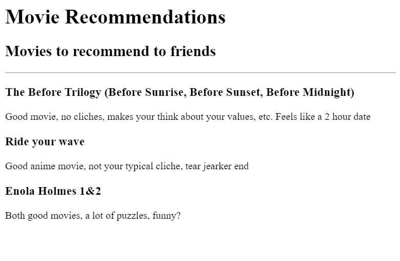
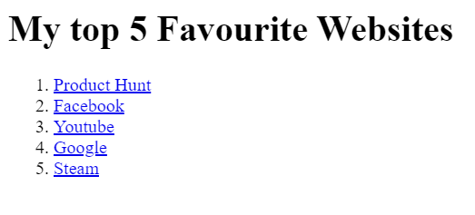
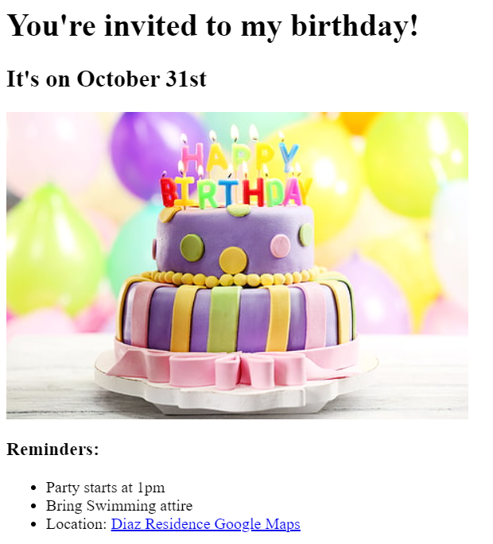
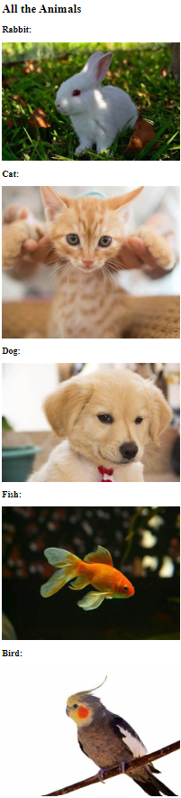

Regil Diaz's Portfolio
Web Development Personal Projects
Click on the blue text or the picture to go to each webpage
Movie Ranking

Listing Elements
My top 5 websites

Birthday Invitation

File Paths

About Me
Contact Me